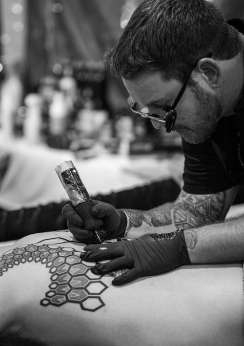

The studio / 01
Made slowly.
Meant to last.
SOKO is an independent tattoo studio for people who want to make a mark with intention.

A small studio with a clear point of view
Less noise.
More meaning.
We believe the best tattoo experience is calm, collaborative, and specific. We work from your references, your story, and the way you want the piece to live on your body.
Our practice sits between fine line, graphic blackwork, and quiet geometry. The common thread is care: strong design, honest guidance, and work that holds up beyond the first photograph.
Start a conversation ↗Studio principles
01
Listen first
Every appointment begins with understanding the idea before drawing a single line.
02
Design for the body
Scale, placement, movement, and longevity are part of the design—not afterthoughts.
03
Make it yours
References are welcome. Copies are not. We build something personal from the starting point.